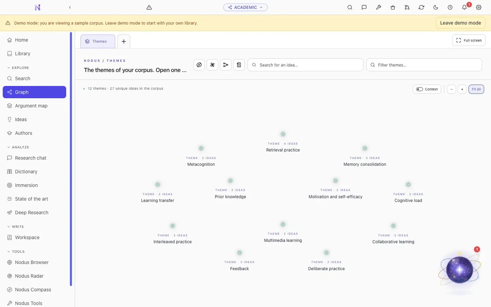
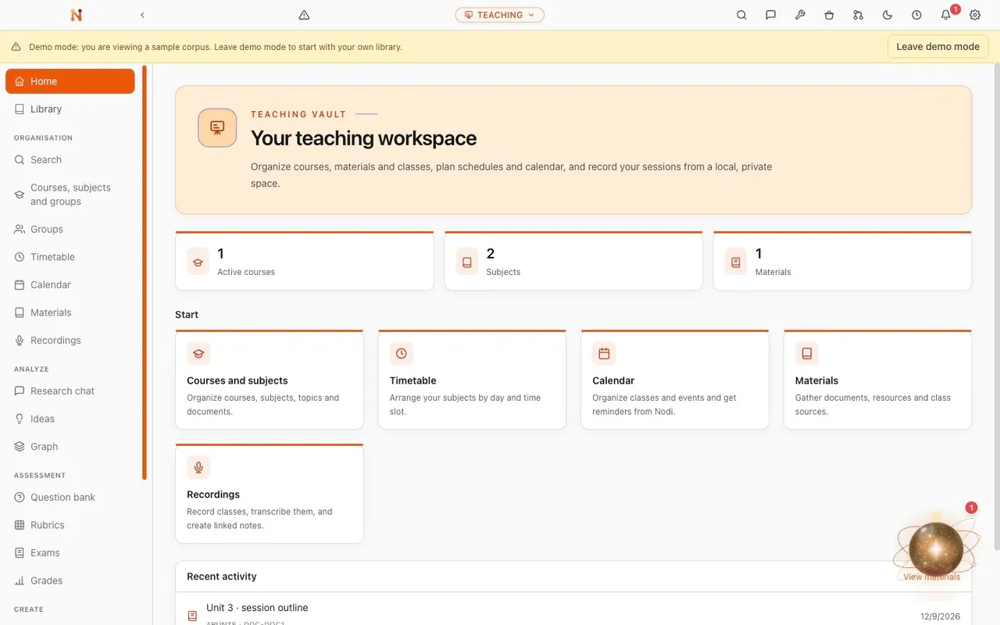
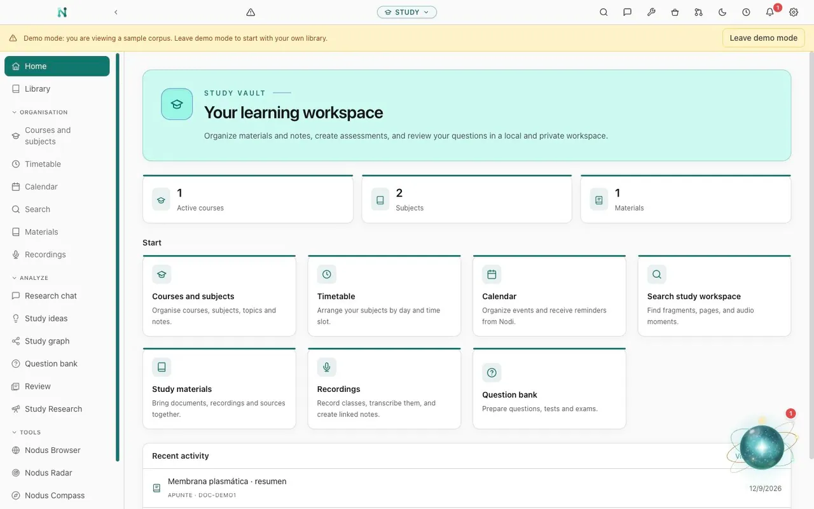
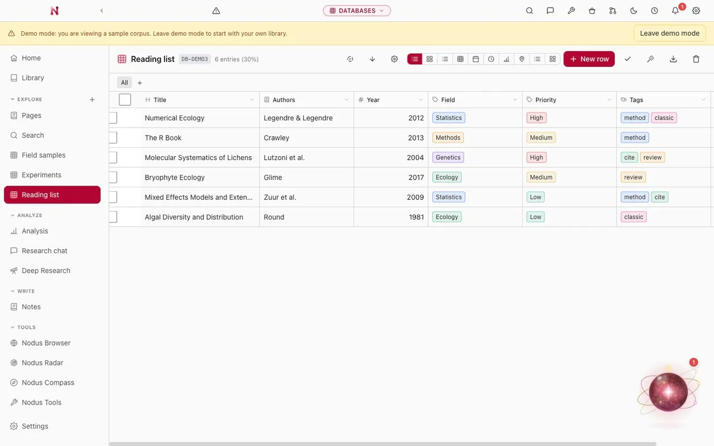

Genealogy
Reconstruct family histories and individual lives from primary sources, across a tree, a timeline and a map, with GEDCOM in and out and every event tied to its evidence.
Open the genealogy demoResearch deeper Teach smarter Study better
Nodus is a free, open-source, local-first desktop application for academic research, teaching and study.
Read on: the Nodus app · Nodus for academic research · the Zotero integration · the Nodus Zotero plugin · AI for academic research · open source and local-first
Nodus is a desktop application for academic research, not a general notes app. You bring in the papers, books and documents you already work with. They can come from Zotero, from a bibliographic export, or straight from a folder on your disk. Nodus then records what each one claims, and keeps the exact passage and page that back it up. A bibliography knows what you have read. A notebook knows what you thought about it. Neither of them knows which source stands behind which idea, and that is the link Nodus is built to keep.
Sources, ideas with the evidence behind them, semantic search, debates, research gaps, and writing with citations you can open in one click. The long version, for researchers and students.
Read the research guideNodus doesn't replace your reference manager. Connect your Zotero library read-only and build the work around it. There's also a standalone plugin that lives inside Zotero itself.
Read about the Zotero integrationWhat Nodus asks a model to do with your own documents, how to run the whole thing offline with Ollama or LM Studio, and where you still have to check the result yourself.
Read about AI-assisted researchWhat the AGPL licence gives you, where your vaults and search indexes are stored, and the full list of what leaves your computer and what sets each request off.
Read about the licence and your dataNodus is organised around vaults. A vault is a workspace with a purpose of its own, so it has its own sections, its own vocabulary and its own live demo you can open right now in this browser. These four are the ones most people start from.
Build your own library inside Nodus, or connect the Zotero collection you already keep. Either way, every work becomes a network of claims, findings and methods, and each idea keeps the exact passage and page that support it.
Turn your own library, or your Zotero collection, into a graph of ideas, linking claims, findings and methods to their exact passage and page.
Surface debates, contradictions and research gaps, then explore them through semantic search, coverage analysis and reading paths.
Research and write with verifiable citations through Deep Research, the writing workshop and copilots for Word and LibreOffice.

Plan courses and classes, build the activities and assessments, follow how a group is doing. Everything stays attached to the materials it came from, and grades never reach a model.
Organise academic years, courses, groups and subjects in one place, with timetables, calendars, materials and recordings connected.
Build question banks, weighted rubrics and printable exams, then apply a published assessment plan in a gradebook that keeps non-numeric states explicit.
Keep grades and student data private. AI generates teaching content only, and never grades, profiles or evaluates students.

Subjects, notes, timetables and materials in one place. Then work through them at your own pace, with questions and review built from what you actually have to read.
Organise your material by academic year, course and subject, then add timetables, deadlines and events to the calendar with reminders.
Work with your materials locally, read PDFs and EPUBs, and ask questions that return you to the exact page, note or second.
Turn your own material into question banks, tests and flashcards, with spaced review and progress tracking.

Fieldwork, corpora, catalogues and coding sheets, in real typed tables. Analysis runs over your actual rows, and it never quietly discards a field type, a relation or a category to get an answer.
Build structured databases with different field types, from relations, formulas and rollups to attachments, CSV import and reusable filtered views.
Run reproducible analysis and charts over your actual rows, from correlations and chi-square to ANOVA and regressions.
Ask questions and automate classification with AI columns, without inventing a field or value that is not in your data.

Five more research modes on the same engine. Same local data, same settings, same rule that a finding keeps the evidence behind it. What changes is the shape of the work.
Reconstruct family histories and individual lives from primary sources, across a tree, a timeline and a map, with GEDCOM in and out and every event tied to its evidence.
Open the genealogy demoCharacters, places, factions, cultures, maps and histories, all connected. Plan the narrative threads with the rules and the continuity of the setting in front of you.
Open the worldbuilding demoWork critically with archival documents and manuscripts: OCR, transcription and provenance beside the original image, separating what the document says from what you infer.
Document and analyse interviews and oral history with local transcription, speaker separation, consent and access conditions, and every passage tied to a clickable timestamp.
Study groups and collective trajectories through scattered sources, resolving name variants and uncertain identities without hiding the doubt behind them.
Vaults give the research its structure. The Toolkit handles everything around it: preparing sources, presenting, protecting, translating, converting, and generally not having to leave Nodus to deal with a file.
Present PDFs and external presentations as slides, with a presenter view, speaker notes and live annotations. Give every page its own speaker text, import existing notes or write them in Nodus, and read them from your computer or your phone, which doubles as a remote for the slides and the live tools.
Pick a tool, then move over the slide. These are the real presenter tools.
Build small tools for researching, studying or teaching with AI, adjust them by describing the change out loud, and hand them to a class or a colleague with a QR code.
Explore Nodus AppsConvert documents, PDFs and images, with light OCR and text utilities, one at a time or in a batch. No bouncing between free online converters, and the original stays put.
Redact data, add watermarks, and create or verify traceable copies. Every step runs locally, and the untouched original stays in your workspace.
Translate text, documents and Zotero attachments with the model you choose, including a facsimile PDF mode that keeps the original layout intact.
AI-assisted OCR for the scans conventional engines give up on. You review it page by page before anything is accepted, then send it straight into a vault.
Nodus is open source under the AGPL-3.0-only licence, with no accounts, no subscriptions and no telemetry. Vaults and the optional cross-vault Library stay on your device and in the backup folder you choose. AI runs with your own key or fully offline through Ollama and LM Studio.
The full manual: every vault, every view, every setting, searchable, for the whole app.
Read the docsHow Nodus compares to the tools around it, workflows worth stealing, and what's being built next.
Read the blogCode, translations, documentation, bug reports, or just telling us what broke. All of it helps.
Join inWhat to expect and what not to, how the AI setup works, and where Nodus draws the line on academic rigour.
Read the answers